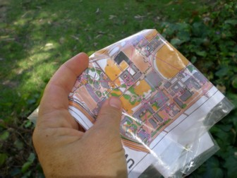
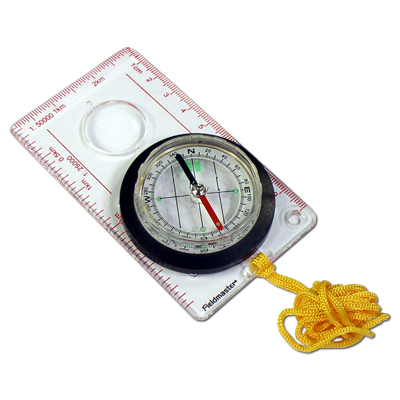
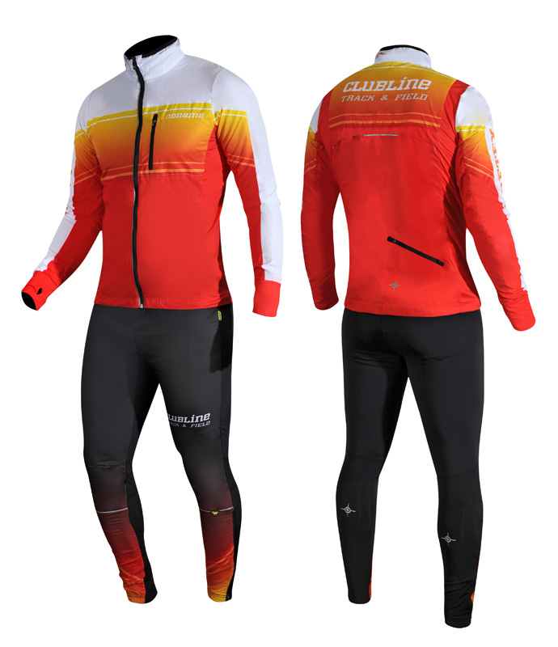
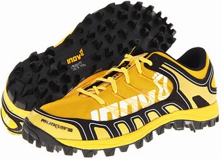
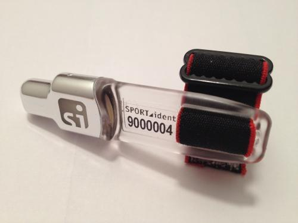

|  | Map | Any kind of map may be used for orienteering (even a street map), but the best ones are detailed five-color topographic maps developed especially for the sport. Orienteering maps show many topographic features, including boulders, cliffs, ditches, and fences, in addition to the elevation, vegetation, and trails. The map is provided by the organizer. It also shows the course with all the control points which must be visited. |
|---|---|---|
|  | Compass | A compass is vitally important for correct navigation. There is a wide variety in quality and size that may be purchased. |
|  | Racing Suit | A racing suit is required for the serious or competitive racer. It is a lightweight, stretchy suit which protects you from the undergrowth while allowing freedom of movement, even if it gets wet. |
|  | Running shoes | Light, strong shoes with non-slip soles are required to allow a good grip on all types of ground. The orienteerer will encounter all types of surfaces, including mud and bare rock. |
|  | Control card | The control card is given to you at the start of an event with the map. It is used to prove that you have visited all the control points in the right order. At each control point, their will be either a electronic device to record that you were there, or a manual hole punch device top mark your card. |
Source; Topend Sports